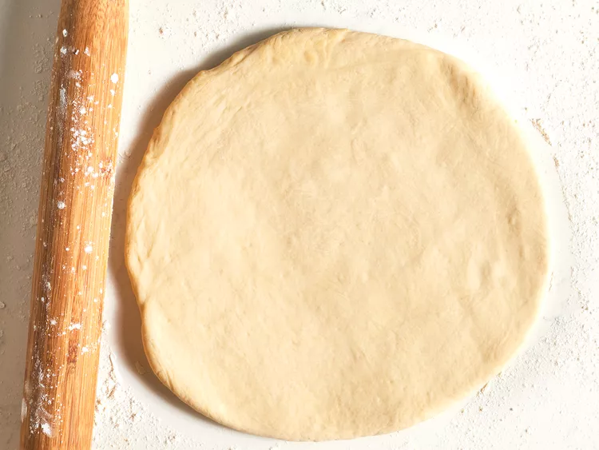

Easy Homemade Pizza Dough

Description
This is a great recipe when you don't want to wait for the dough to rise. You just
mix it and allow it to rest for 5 minutes and then it's ready to go! It yields a soft
chewy crust.
If you're looking for a homemade pizza crust recipe that's great for beginners,
you're in luck. This top rated recipe is super easy to throw together on a whim-
and it puts the store-bought stuff to shame. Learn how to make the best pizza
crust of your life with just a few ingredients, find out how to shape the dough,
and get our best storage secrets.
Pizza crust Ingredients
You need just five ingredients (plus some warm water) to make this super simple
YeastActive dry yeast is a leaving agent, which means it's the ingredient that causes
the pizza dough to rise.
SugarTo activate your yeast, you'll need to dissolve it in warm water with a teaspoon
of sugar. The sugar gives the yeast something to eat and speed up the
activation process. You'll know your yeast is active when it becomes bubbly and
frothy on top.
Bread FlourBread flour is ideal for pizza crust because it creates chewier result than all-
purpose flour. This is because it contains more protein, which helps produce lots
of gluten. Gluten is what gives the crust elasticity.
Olive OilOlive oil serves a couple purposes when it comes it to pizza crust: Not only
does it add color and flavor, but it creates a barrier between the oil and
water. This oily barrier prevents sogginess.
SaltA little bit of salt goes a long way. Salt adds flavor, strengthens the
gluten (creating a chewier crust), and slows down fermentation
(resulting in a better rise).
How to Roll Out Pizza Dough
Stretching pizza dough is the most hands-on part of the pizza crust-
making process. It takes a little practice, but it's as easy as pie (pun
intended). To shape the dough:
Let the Dough come to Room Temperature
After you're finished mixing the ingredients, allow your dough to rest on
the counter for about 30 minutes. This will allow the gluten to relax,
making the dough much easier to stretch and shape. Cold dough is
much more difficult to work with.
Prepare Your Surface With Oil
You might feel inclined to prep your workspace with a big handful of
flour to prevent sticking. This is a helpful step with many kinds of dough.
However, in this case, too much flour can make your pizza crust tough.
Instead, rub your surface (and your hands) with a few tablespoons of
olive oil and maybe a little bit of flour. This will prevent sticking,
encourage a crispy texture, and ensure a gorgeous golden color.
Shape the Dough
You have a few options when it comes to shaping the dough. Stretch it in
the air, use a rolling pin, or pat it with your hands. No matter wich
method you choose, make sure not to overwork the dough. Working it
too much will create a tough texture. When you're done, you should
have an even circle that's about 10 to 12 inches wide and about ⅓-inch
thick. If you get too thin, the crust may not be able to support the sauce
and toppings.

How Long Does Pizza Dough Last In the Fridge?
This pizza dough will last for about five days in the fridge. Store it in an
airtight storage container or a bowl tightly covered with storage warp.
Allow the refrigerated dough to sit for about 30 minutes at romm
temperature before using.
Can You Freeze Pizza Dough?
Yes! You Can absolutely freeze pizza dough. This is a great option for
people who make pizza often. Prepare the dough for freezing by rolling
it into a ball and lightly coating it with oil. Place the ball in a freezer-safe
container labeled with the date. Freeze for about three months.
To thaw the dough, simply transfer it to the fridge the night before you
plan to use it.
Ingredients
- 1 cup warm water (110 degrees F/45 degrees C)
- 1 (.25 ounce) package active dry yeast
- 1 teaspoon white sugar
- 2 ½ cups bread flour
- 2 tablespoons olive oil
- 1 teaspoon salt
Steps
- Step 1: Preheat oven to 450 degrees F (230 degrees C). Lightly grease a pizza pan.
- Step 2: Gather all ingredients.
- Step 3: Place warm water in a bowl: add yeast and sugar. Mix and let stand until, about 10 minutes.
- Step 4: Add flour, oil, and salt to the yeast mixture; beat until smooth, You can do this by hand or use a stand mixer fitted with a dough hook to make it easier. Let rest for 5 minutes.
- Step 5: Turn dough out onto a lightly floured surface and pat or roll into a 12-inch circle.
- Step 6: Transfer to the prepared pizza pan.
- Step 7: Spread crust with sauce and toppings of your choice.
- Step 8: Bake in the preheated oven until golden brown, 15 to 20 minutes. Remove from the oven and let cool for 5 minutes before serving.





Cook's Note:
You can use all-purpose flour, but the bread flour makes a superior
crust.
If you have a pizza stone, dust it with cornmeal and use it instead of a
greased pizza pan.
Back to top
Back to main page